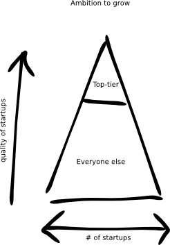
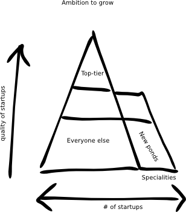
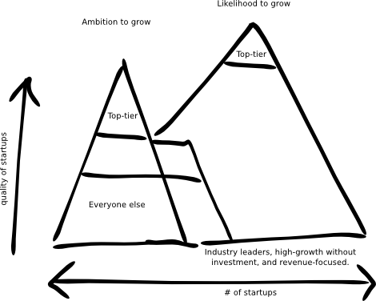

I’m repostiing this from last year because it represents some of the principles that drive Source, and I’d like to discuss them with you.
One day, three Eskimos were walking to their ice hole. On their way they met a famous fisherman named Paul. Paul was famous across the Arctic for catching huge salmon. Suitably impressed, and rather in awe, the three Eskimos headed on to their ice holes talking the whole way about Paul and his salmon. They soon decided that if Paul only fished for salmon, and had become famous by fishing for salmon, that they too should begin to focus exclusively on salmon.
Upon reaching their ice hole the Eskimos excitedly set about fishing. On the first day they caught several salmon, and were very pleased with their new approach.
Soon though, the salmon began to deplete. The Eskimos still caught plenty of delicious sea creatures, but each was thrown back into the water when the Eskimos saw that they weren’t salmon. As time went on the Eskimos began to go hungry. Yet they remained so convinced that they should be fishing for salmon that they didn’t think to look for different fish.
Accelerators aren’t Eskimos, but they are currently all fishing for the same kind of startup and experiencing similar issues: a falling quality and quantity of startups to choose from.

{kind=link}
It’s time the Eskimos began to look for new kinds of marine life, and accelerators began to look for new kinds of startup.
Missed opportunities
Accelerators have taken a very visible role in startup ecosystems, but the narrow focus of the accelerator model is leading most communities away from other opportunities.
At the moment all accelerators use the same selection criteria: who has the greatest ambition to grow.
They’re fixated on who can become global leaders in their field, and so focus primarily on scalability; commonly defined as “product scale”, “internet scale” or “zero friction”, but effectively meaning rapid hyper-growth. When selecting startups, accelerators tend to compromise on the team’s ability to achieve this type of growth, rather than on their ambition to grow.
Most accelerators will only accept candidates whose ambition is to become global leaders in their field. The goal of these accelerators is for one in every ten startups to progress onto the next stage, achieving a 100% to 200% increase in valuation over the traditional three-month long programme. This blockbuster model is based on a venture capitalist approach, in which it is given that one large success pays for all the failures. However, because accelerators are so focused on this particular kind of high-risk growth, they often skip opportunities with equal or greater return on their overall investment.
They’ll settle for teams who want to scale globally, but probably can’t, rather than supporting teams that have more realistic goals that they’re likely to acheive.
“Not investable.”
Here’s a recent story from Romania, where an accelerator turned down a pitch by a creative agency who were making augmented-reality media. One of this agency’s chief ideas was to enable mobile phones to unlock extra media behind billboards, so that when you pointed your phone’s camera at the billboard a whole array of extra characters would jump out, visible on the phone’s screen. The creative talent and ability to execute was clear. There was also clear exit potential - this was a marketing agency with the ability to exit to a large multinational agency for €10-30M within a few years, (company valuations in the agency industry are based on revenue) if they could hire fast enough. Given they’re in Bucharest, that seems likely.
Yet the startup failed to proceed past the pre-selection event.
Why? Because the accelerator was looking specifically for product based businesses, and so, blinkering themselves to other opportunities like service providers, they were tied to a narrow definition of what a startup should be and how it should grow. They simply couldn’t support a service provider and so they passed over this worthwhile investment.
In many ways, Silicon Valley investors are bad role models. An anonymous Silicon Valley startup has recently led the charge, calling for VCs to open up their doors to more startup applications. Frustrated with VCs who constantly dismiss requests for meetings because they demand introductions from their existing network, excluding newcomers with a misleading phrase, “you’re outside our investment thesis.” This then engenders a startup culture that’s biased towards manipulating investors.
This recent plea has called for an end to investor arrogance, telling VCs to “stop being stuck up about cold emails”. The final inducement offered is that, even setting fairness aside, willingness to open up to more startups could increase returns. It’s typical for investors to openly characterise unsolicited requests from startups as “complete garbage” and close themselves off. Those who take these investors as role models not only rob themselves of some fantastic opportunities, but exclude a great number of startups who are already motivated, acting, and deserving our support.
Specialising in local strengths
Accelerators that copy others blindly want to invest in a very specific type of high-growth startup. And that’s their prerogative. The thing is, there is amazing talent and opportunity outside of this narrow field.
In Prague, anti-virus giant AVG has peppered the community with experienced founders, and potential angel investors - not just for antivirus products, but a wider range of security consultancies, much better-suited to job-growth. In Romania and Bulgaria, outsource IT development agencies have generated loads of new wealth, and are able to teach others to repeat this. In Estonia, world-leading e-government know-how is ingrained, but many startups in this space will likely grow without the need for investors. All of these local strengths are completely ignored by local accelerators copying foreign models.
We’ve helped others act on their local strengths, such as the Collective Accelerator with Camden Town Unlimited in London, which helps creative talent establish their own business. This accelerator has just 3 weeks to take a clear creative talent and teach them to demonstrate viable market demand for a business that will financially sustain them. We teach Lean Startup, business models, cashflow and marketing. At the end, most startups win a £10,000 founder-friendly, forgivable loan. Another out-of-the-box example is the Village Accelerator in Sofia, which teaches Roma people how to build tech products that address the high-growth developing economies.
Turns out the accelerator model, with a more inclusive attitude of who to support, can turn create successes from those historically viewed as lost causes.
Prioritising pitching over pivots
There is also a danger in how we measure the success of startups once they are in an accelerator programme. The accelerators measure themselves by the on-going investment of their startups. The accelerator is then a run-up to a final pitch day to investors, known as a Demo Day.
Preparing to pitch on Demo Day can divert startups from working on their business, or making key pivots that were identified in their first two months at the accelerator. The short-term focus is all about wowing investors through polished pitches, rather than adapting the startup business itself.
Ignite have innovatively dropped their demo day; they’ve realised that what works in Silicon Valley doesn’t necessarily work for them. By instead focusing on ongoing relationships with a smaller number of local investors, their investment rate skyrocketted.
Not all accelerators are so agile. The Demo Day phenomenon has been known to lead accelerators to subjugate the growth of the startups (or founders) in favour of the perceived success of the accelerator itself, pressuring startups to appease the accelerator’s investors with polished pitches that the founders oppose. After all, the fundamental truth is that founders are replaceable.
{kind=link}
We need to start to look to more productive growth targets; industry verticals, smaller exits, and revenue generating startups (as opposed to investment generating startups). Jaw-dropping examples of this attitude are Valve, Basecamp and GitHub: Both are high-growth tech startups, globally dominant in their fields (and famous outside of their fields) and both grew without the need for taking investment. They did this by focusing on revenue from customers, not investors.
Startups without investment are capable of becoming great businesses with famous teams and world-class work environments. But even if they make several million euros per year, they’re still disparagingly referred to as “lifestyle businesses” by investors, and categorised as meaningless. Investors don’t differentiate between “non-investible” and “lifestyle businesses.” When we copy their definition, we inherit their myopia and miss out on all the local Basecamps and Githubs.
Accelerators without investment
One of the main benefits for corporates to run accelerators isn’t the investment opportunity (seed investment for tech startups is a poor-performing asset class) but the bringing the corporation face-to-face with the most innovative technology available.
Joining an accelerator is a tough decision for startups. The fact that startups have to give up a significant chunk of equity to participate dissuades many, often those who are already successful. From the corporate perspective, selecting startups becomes based on investment criteria rather than more relevant criteria to the corporate. For example, an investor will look for a return based on the startups immediate launch and growth plans, where as the corporate sees value in whether or not the startup’s technology can help their customers. Investors can be great advisors here, but if they have a stake in the startups, there’s a conflict of interest.
An early attempt at a Microsoft accelerator involved investment, but they learned this interfered with their clear goal - keeping Microsoft closely supporting the leading edge.
By removing investment from the equation, Microsoft was no longer clouded by others’ definitions of “startup” or other factors. They could focus on the right startups for them- and create the best deal for the startups and the local ecosystem.
The Microsoft Ventures accelerator programme now runs in seven very diverse countries: Beijing, Bangalore, London, Berlin, Tel Aviv, Paris and Seattle. It maximises around local strengths and a truly global network focusing on helping startups be successful.
It’s worth noting that investors are still involved as mentors and at demo days. But the programme isn’t dictated by what they need.
So far we’ve only covered a few options which merit our attention, but we can see the payoffs can be brilliant.
So why does everybody still aim for startups with global domination in their hearts, when there is often a greater likelihood of success attached to other ambitions?
Investors have a stranglehold on startup hype
Accelerators aim for global domination because it’s what most startup investors focus on…
A recent article by Marcin Szelag, a Partner at a seed fund called Innovation Nest, offers a clear case in point. His advice to Polish tech entrepreneurs, “If you want to participate in the tech race, be sure to build a business that can be scaled globally.”, offers a clear example of investor hype surrounding scalability. Marcin continues, “Being in tech, startups no longer have a choice – they need to go global” and induces us to, “Agree that creating a global company is not a matter of choice, but necessity”.
This sounds like empowering advice, but in reality Marcin convolutes scalability with global ambition, and downplays that the “scalable” startups he refers to as role models also tend to tackle local markets one at a time; Facebook, AirBnB, Foursquare and most of the “global, scalable” startups all have very specific local strategies that got them to be global players.
He leaves us with the final takeaway “Support only the best people who have set the objective of being the 1 in 50,000”. So, only support the hugest successes - and leave the others stranded?
From a broad ecosystem perspective, investors are often stumps we have to ignore and grow around to get to the next level. “Like a rotting treestump in the forest, they’ve established themselves from a past leadership position, still get all the attention, but get in the way of progress.” They do what works for them, but we have to see the broader picture to grow a successful ecosystem.
Investors aren’t bad guys; most work in the best interests of startups from their point-of-view.
The problem is when they perpetuate the idea that the “best” startups for them are the best startups for everyone.
Not true.
Economic growth and innovation
Organisations who are trying to stimulate growth across the economy will have very different long-term goals to investors who look at which individual startups have the greatest growth potential. Widespread economic growth through job creation is at odds with the hyper-growth of a few runaway successes, so governments and investors need to look for different types of startups who can meet these different needs.
The Echo Effect
We can’t lay the blame at the feet of investors. There’s an echo effect going on behind the scenes; we amplify investor hype and perpetuate the problem.
Take valuations for example: investors often focus on big valuations, but it’s the cumulative effect of everyone else focusing on this which has convinced many startups that higher valuations should be their end goal. This misleads many into measuring the success of their ecosystem by their valuations. But as valuations are set regionally based what investors will pay, they are not a good thing to compete on. A far more relevant measurement is whether investment deals are happening at when the local startups need them.
Even beyond that, we start to build assumptions into our language, describing early-stage startups as “pre-seed” or “pre-accelerator.” This creates a detrimental bias against startups that don’t need investment; they get excluded from our support simply because they’re not on an investment path!
Faulty statistics
The myths get further perpetuated by studies that use convenient but incorrect definitions of “startup” and “accelerator.” Often, these are heavily influenced by hype.
The recent report from the Startup Europe Partnership makes a number of these mistakes:
- They define ‘scaler’ status as raising more than $100 million in investment, not based on revenue or headcount growth which are more meaningful scale measures.
In doing so, they don’t count many startup powerhouses such as LogMeIn, which only raised $30M before going public! Or Prezi, which raised $70M and employs hundreds. Both are billion euro businesses, and form the bedrock of the Budapest ecosystem – but they’re defined as irrelevant by SEP. Completely ignored in their data.
- They confuse the definition of ‘exit’ – when the investor or founder receives back their initial investment capital – and ‘acquisition’ – when a bigger company buys the startup. In fact, they appear to ignore all exits that aren’t acquisitions.
By doing this, SEP actually undermines what works for startups and the economy – independent growth into big companies, rather than just startups selling to an existing corporate.
Their prior Seed-DB report also made similar errors, requiring an accelerator programme to invest to be included. This skewed the data because it excluded a number of great accelerators, like Microsoft Venture’s global accelerator programme, because they don’t take equity in exchange for their support. (There’s an irony here that Microsoft is an SEP partner.) Seed-DB also excluded HackFWD, one of Europe’s first accelerator programmes which was a major catalyst to the German ecosystem - also penalised because it didn’t copy the typical US accelerator structure.
We see in all these cases that the investor hype has a major, negative effect, not only on our attitudes, but even on the data we rely on to make decisions.
If governments and accelerators continue to focus solely on the investors’ definition of what makes a great startup, they will find that they blind themselves to local strengths and will miss out on the opportunity to create tech startup ecosystems. Moreover, accelerators will continue to find themselves competing for the same candidates and missing great opportunities to profit along the way.
Loss of talent
Focusing largely on investors’ needs can also lead to long-term loss of entrepreneurial talent. When a startup doesn’t work out, investors deprioritize the founders who no longer meet their portfolio needs. A key role is left unmet: encouraging all entrepreneurs to share their experience. We need these entrepreneurs to share this experience in order to create a thriving environment in which new and promising founders can be mentored and guided by the startup community as a whole.
Solutions so far: location, location, location
Paul Graham, the creator of Y Combinator, has produced some insightful material on how to build a startup community, but while his arguments are well-structured and compelling, his work seems symptomatic of a larger problem: we keep trying to emulate San Francisco.
We’ve seen first hand that it is more effective to work with the communities that already exist: meeting them where they are based, connecting them to each other, and using their strengths to connect them to the global startup ecosystem. This the strategy we used to bring Lean Startup to Europe, and how we used European strengths to truly evolve the methodology to include user experience and business model design. This stands in stark contrast to forcing people into a mould created by foreign investors or so-called startup experts, who simply mimic foreigners.
So instead of using Silicon Valley, London, Dublin or Isreal as a checklist for success, we’re moving toward a more relevant and adaptable framework for building up our own startup ecosystems. There are lesson to be learned from leading cities, but founders need to draw on their local strengths, rather than vainly trying to cook someone else’s recipe without the same ingredients.
We’re developing our own measures of success.
This is how we’ve solved some of the problems that accelerators and startup communities are currently facing, and built effective startup ecosystems on our own terms.
We’ve worked in-depth with startups and programmes in all corners of Europe. There are still too many independent variables at work for us to effectively translate learning from one startup community to another directly.
Redefining startup success
To determine exactly what startup success looks like for us, we broaden our definition of what makes the “best” startup so it includes local strengths.
One way to do this is to change the focus from ‘ambition to grow’ to ‘likelihood to grow’. This way, we move our support to local talent who have a much better shot at success.
Once we’ve changed how we look at startups we can begin to change how we develop our ecosystems. Here we need to measure the number and quality of local entrepreneurs, keeping an open mind as to who might constitute a startup founder. Look for people who may not fulfill the ‘typical’ startup stereotype, but who have still demonstrated success.
The blockbuster model is designed around providing the maximum return on investment for investors, but when building an ecosystem we need to focus on helping more startups succeed.
If we look for different growth measures, more startups will survive and our ecosystem will benefit.
 The blockbuster approach (left) is based on ambition to grow - a few win, but win big. The support approach (right) is based on likelihood to grow, many more win, and this momentum builds up regionally as the winners share their experience and networks.
The blockbuster approach (left) is based on ambition to grow - a few win, but win big. The support approach (right) is based on likelihood to grow, many more win, and this momentum builds up regionally as the winners share their experience and networks.
The future: diverse ecosystems
Once we’ve moved away from the hype surrounding startups we can finally begin to build one of the most valuable startup and accelerator resources: a true startup ecosystem.
There are some experiences we don’t want to go through alone. The first time you drive a car it helps to have someone who actually knows how to drive beside you in the passenger seat. Similarly, in your first skydiving lesson you’d be a little alarmed if the instructor were to suddenly announce that they want you to jump headfirst out of a plane, alone, while they stay safely on the ground. It helps to have experienced people with you along the way, sharing their skills and learning with you.
Building on what we have, we want to identify that experience, and facilitate its transfer to the new, young and ambitious.
Accelerators know that the most valuable resource they provide their startups is their networks. Access to customers, investors, mentors, and so forth is the lifeblood of a young company. Reducing lead-time to make these connections is what actually accelerates the startups towards their goals. The larger, more active, and more diverse that network is, the more helpful it is. The key here is forging lasting links that allow founders to tackle challenges with the support of the experienced. Accelerators build communities around them.
But accelerators often fall short of building ecosystems because of their narrow focus.
When we step back and look at growing entire ecosystems, we’re shooting ourselves in the foot by being so exclusive. Startups can easily grow in different industries and regions, if we focus on giving them the right tools, rather than trying to pick the winners.
It’s supplying the picks and shovels freely that enables a gold rush. If you only supply the fastest runners, you undermine your best prospectors.
The Apex Model for ecosystem evolution
Accelerators compete for startups, and those with the best reputation get more, higher-quality applications.
Y Combinator is the world’s first and most successful accelerator. Originally based in Boston, and now Silicon Valley, it’s startup alumni include Reddit, AirBnb and Dropbox. Their reputation allows them to state, “There’s already a Y Combinator in every city - it’s Y Combinator.” Indeed, if you’re a startup that’s good enough for YC, you’ll apply and move there. Just as wannabe actors flock to Hollywood, startups around the world cast their starry-eyed aspirations to Y Combinator.
Also in the top-tier, there’s Seedcamp, Europe’s most established accelerator, which benefits from an impeccable reputation and massive, high-calibre mentor network. They routinely tour around Europe to cream off the most credible and ambitious startups.
It’s hard to compete with the top tier because their reputation and high-powered networks have compounding effects. They have a huge head-start. They have defined an apex around their strengths.

But rather than playing second-best, we’ve seen some accelerators with more strategic reactions.
Some, like Eleven and Launchub in Bulgaria, make it their job to connect to neighbouring countries and help grow the startup communities there.
Other regional accelerators are starting to specialise. For example, Techstars London entered the market by focussing on later-stage startups. Techstars and Startup Bootcamp launched a series of specialities, like Internet Of Things and Fintech. Collider specialised in branding, Startup Wiseguys on business sales, some accelerators focus on games.
These specialities are a reaction to increased competition for startups - known as the pipeline problem - and to operational funding issues when accelerators copy their business models from investment funds.
Specialising widens the pipeline because they fish from new ponds. Gaming accelerators promote themselves to game designers as much as prospective startup founders, hardware accelerators to hackspaces, fintech to entrepreneurial bankers.

The specialist accelerators can offer a better network and programme, out-competing the top tier for niche startups. They can offer distribution connections to startups selling hardware, access to the financial sector for fintech startups, world-class game designers as mentors.
The promise of industry capitals
As the net widens, there’s potential to out-perform Y Combinator - the future Rovios and Fitbits of the world rival Dropbox and AirBnB. That means there’s potential to create world-class startup centers around industry verticals, if there are local strengths and existing networks to draw from.

That’s the idea - but in practice, the promise of specialist startup accelerators creating world-class industry ecosystems isn’t proving to be true. Specialist accelerators aren’t attracting broad industry ecosystems around them, and their best startups are still attracted to the existing top-tier.
Why? Accelerator business models are in flux. As they evolve towards their bright future, they’re still held back by previous generations.
New business models for accelerators
The reality is the investement fund model accelerators follow gives them too little operational funding. Funds typically get 2-3% of their fund size to run their programmes - so on a £2M accelerator fund, that’s only £60k per year. In this model, all the accelerator’s profits are tied to the exit of its blockbuster startups. And if that happens, it’ll be years later.
So accelerators often seek funding from government, corporates, or sponsorships. Relatively little operational funding comes from the investors themselves.
Specialisation not only helps get sponsorship, it makes accelerators extremely profitable without the need to follow the blockbuster model.
They’ve inherited this blockbuster constraint from their predecessors - and needlessly maintain it - both in their selection process, and in the support network they build.
Thus, world-class specialisation communites don’t emerge from individual accelerators because they’re simply not inclusive enough to attract the best of that industry.
Defining new Apexes
Taking a more inclusive definition of accelerator and diverse definition of startup, we’ve experimented with extending this further. Creative accelerator in Camden, London applied accelerator thinking to very early-stage creative service businesses. Camden can assert its world-class reputation as can many other cities and regions. Camden is known globally as a creative and cultural centre. Wageningen, Netherlands is known a crucible for technology in the agriculture industry. Montenegro’s tourism industry is known for being competitive and innovative. Just as London has seized fashion and finance startups, other places can build on their existing strengths.
But this is where the narrow view that “good means scalable” becomes a liability. It causes the programmes to ignore great, local potential because they don’t adhere to the checklist we borrowed from investors and past accelerators.
The truely top-tier accelerator programmes in industry verticals will not limit their support to the startups with the greatest ambition to grow. By focusing on those likely to grow by any means, they’ll find the quality of their pipelines vastly improved.

As long as programmes design themselves around old definitions and contraints, they’re always going to be second-rate to the investors and cities that invented their checklists. Once they release themselves, they’ll gain access to much better investments, more closely aligned to their goals. True industry leaders aren’t always laser-focused on “product scalability”; many high-growth tech companies rightly avoid equity investment, and revenue-focused businesses can grow and pay off quickly - both financially and in terms of job growth.
So how do we build a great ecosystem?
A key requirement for any ecosystem is diversity.
The first step is seeing the value of the diverse ingredients you already have, so you can use them strategically.
If we build on the local experience and strengths, each new startup will have a far greater likelihood of success, and of succeeding faster . This also helps accelerators to adapt faster to new locations, as they can link up with local entrepreneurs so as to quickly create and adapt a framework that works in each location.
Be broad in scope. Build and connect multiple communities rather than marching everyone to the same drum.
Our ultimate advice to local startup leaders?
Challenge the hype: go fish in new ponds. We need to expand on the narrow focus on high-growth tech startups, and encourage governments and accelerators to focus instead on local strengths and local goals.
We need more than the traditional mould of startups. Be inclusive. Therein lies the diversity you need to enable a true ecosystem.
{kind=link}